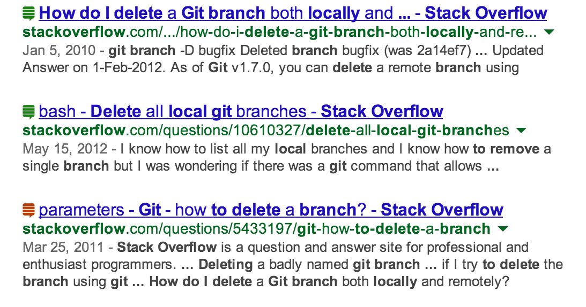

DevGib
A Chrome extension that analyzes the popularity and quality of programming-related links.
Install
from Chrome Web StoreSource
on Github
DevGib is a Chrome extension that shows ranking for programming-related resources in the web based on their popularity and quality.
DevGib currently supports:
- Github repositories.
- StackOverflow questions.

DevGib works anywhere in the web.
How to setup DevGib:
- Install the extension.
- After installation, click the DevGib extension icon, and press the Generate access token link. In the Github application page, press Generate new token. Use the default scopes (remove the `repo` tick if you don't want DevGib to have access to your private repos), and press Generate Token.
- Copy the generated toke6n to the text field inside the DevGib extension popup.